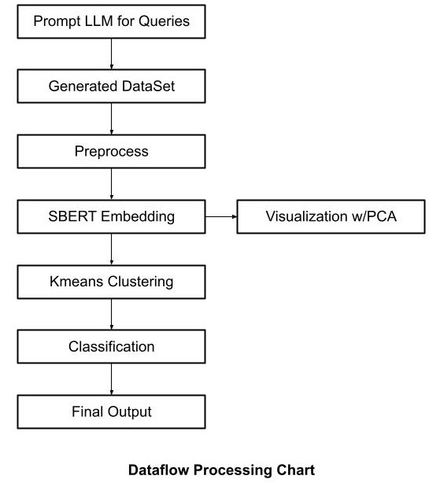

Introduction
The purpose of the project is to take and classify several example queries belonging to different categories and group them by semantic similarity. The dataset of queries is generated by prompting Open AI for a list of questions grouped into several categories that various people are likely to ask an LLM for assistance or feedback with in matters of technology, travel, history, etc. The question categories are grouped together by vectors These questions are then represented as numerical vectors using a sentence embedding model, allowing us to analyze their semantic structure in high-dimensional space. By combining clustering and classification techniques, the system is able to organize queries meaningfully and assign appropriate category labels, even for previously unseen inputs.
The following diagram outlines the data flow of the project, beginning with query generation and ending with query classification. Each stage: embedding, clustering, and classification, builds on the previous to form a complete pipeline for semantic analysis of natural language questions. In the sections that follow each stage is explained in greater detail. This covers how the data is generated, how semantic embeddings are applied using SBERT, how clusters are formed to group similar queries, and how categories are predicted using a logistic regression classifier.

Datasets
To generate the main dataset used in the project, a custom prompt is sent to the Deepseek V3 model via the OpenRouter API. This prompt requests Deepseek to generate several hundred diverse, natural-language questions that a typical end user might ask a large language model. The questions are organized into generalized categories such as technology, travel, education, or history to simulate a realistic range of LLM use cases. The prompt also enforces a strict response format: each question must be returned as a JSON object with two keys—"Question" and "Category". This structure ensures consistency in downstream parsing and processing.
The dataset generation is done in a separate code file before the embedding and clustering step. A prompt is loaded from a text file and modified to include the desired number of queries. Deepseek is prompted to return the questions in a Json format with both the question and category. The generate_queries() function then uses the Deepseek model to synthesize the data. Once a successful response is returned, the user is prompted to confirm it for correctness before the dataset is saved.
Embedding
Embedding the queries is a necessary step in the processing of natural language data to assign numerical values to semantic material. These embeddings can then be used to further process, modify, or classify the natural language data. For the purposes of this project, we have chosen to use the Siamese Bidirectional Encoder Representations from Transformers (SBERT) model. This model is specifically designed to encode natural language data in a way which preserves semantic context/meaning within the sentence. SBERT was chosen as it is specialized for providing highly accurate semantic similarity scores when compared to competing models (e.g., BERT). Embedding the natural language data into matrices using SBERT preprocesses and prepares the data for the clustering process.
Clustering
Clustering uses the numerical embeddings provided by SBERT to group natural language data into semantically similar groupings called clusters. The goal of the clustering process is to preprocess the data for category classification and to establish which queries should be grouped together under the same categories. A k–means clustering algorithm was chosen for this use case as it is widely used for the purpose of grouping together semantically similar natural language data, is simple to implement, and works very quickly. The k-means clustering algorithm functions by initially placing a set number of cluster centroids in the vector space randomly, then assigning each of the data vectors to their nearest cluster centroids. The algorithm then shifts the centroids by calculating the mean of the data points which were assigned to each of the centroids. Finally, the process is repeated until no significant change occurs. This also means that the clustering algorithm is highly dependent on the initial placement of the cluster centroids.
To mitigate the disadvantage that comes with having a set number of clusters, a silhouette score is calculated for each of the results of the algorithm running on up to two times the number of categories provided in the dataset. The silhouette score measures how close each of the data points in the cluster is to the others as well as the separation between each point in the cluster to neighboring clusters. The model with the highest silhouette score is picked as the ‘best’ and its centroids are used for the final classification to assign each cluster their corresponding category labels.
Classification
After clustering the queries, the next step was to predict categories for new, unseen questions. A multinomial logistic regression model was chosen for this task using the same SBERT embeddings from the clustering step. This approach kept the pipeline simple, quick, and reproducible. It suited the project’s needs due to its fast training on CPU, easy to understand coefficients, and proven effectiveness, often performing as well as more complex neural networks.
Before training, queries retained their original LLM-generated labels, resulting in clean and L2-normalized vectors across the fourteen categories. A grid search optimized two hyperparameters, the inverse regularization parameter C (tested from 0.001 to 1000) and class weighting (none or balanced). Stratified cross-validation focusing on the macro F1 score selected a C value of 1.0 without class balancing. The final model achieved an impressive accuracy of 0.958 ± 0.023, with a macro precision of 0.967 ± 0.016, a macro recall of 0.958 ± 0.025, and a macro F1 score of 0.958 ± 0.024. Most errors occurred between similar categories, such as Creative Writing and Content Creation, or Math/Logic and Philosophy. When tested on a separate test dataset, the model maintained strong performance with an accuracy of 0.955, confirming its ability to generalize to unseen queries.
Although the linear model may struggle with subtle, complex boundaries between conceptually related categories, its simplicity, speed, and transparency make it ideal for the project's current scope. The confusion matrix analysis revealed near-perfect classification for several categories, including Data Analysis, Education, and Health/Wellness. Future improvements could involve testing kernel SVMs or adding more data for categories showing the most confusion.
Conclusion
Video
A link to the project video for convienence.